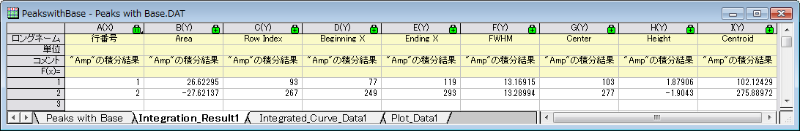

ピークの積分
Integrate-Peaks
サマリー
ピークアナライザを使用してピークを積分し、それらの面積を割り出します。
必要なOriginのバージョン:8.0 SR6
学習する項目
- 既存のデータセットを基線にする方法
- スペクトルデータから基線を減算する方法
- ピークアナライザからピーク面積を計算する方法
ステップ
- 新しいワークブックを開き、\Samples\Spectroscopy\Peaks with Base.DATファイルをインポートします。
- 2列目を選択します。

- メインメニュー内で解析をクリックし、ピークと基線を指した後にピークアナライザをクリックします。
- ピークアナライザの初めのページ（ゴールページ）で処理グループ内のピークの積分を選びます。「進む」をクリックし、「基線モード」ページに移動します。
- 「基線モード」ページで、基線モードドロップダウンリストから既存データセットを使用を選びます。データセットのドロップダウンメニューの右側にある三角形ボタンをクリックし、[PeakswithBase]"Peaks with Base"!C"Base"をフライアウトメニューから選択します。「進む」をクリックし、ピークアナライザの「基線の処理」ページに移動します。
- 「基線の自動減算」チェックボックスを選択します。上段パネルの「ピークの積分」アイコンをクリックしてピークの積分ページに行きます。（あるいは進むボタンを2回クリックします。）プレビューグラフでは、番号が付いた2つの黄色い四角形が表示され、デフォルトで検出された2つのピークを示しています。
- 積分ウィンドウ幅では、プレビューグラフを変更するを選択します。グラフ上の1番の四角形の内側をクリックします。1対のハンドルマークが黄色い積分ウィンドウの両端に出現します。このハンドルをドラッグすることで積分が行われる範囲を調整します。2番の四角形の内側をクリックし、同じように2つ目のピークに関しても調整します。
- ピークアナライザのピークの積分ページで、計算する値グループで希望の項目すべてを選択します。例えば、各ピークの中心を計算するには、「ピーク中心」チェックボックスを選択します。「積分データに対するピーク面積」を出力したくなければ、「積分データに対するピーク面積」チェックボックスのチェックを外します。選択したら、「完了」ボタンをクリックして、分析を実行します。
結果は、Integration_Result1というワークシートに出力されます。

「計算する値」グループで「ピーク面積」にチェックを付けていれば、この結果ワークシートの「Area」列にピークの面積が算出することができます。